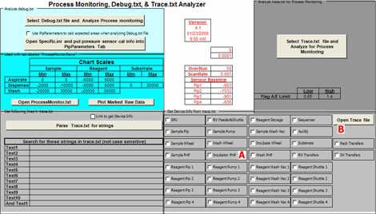

Troubleshooting Pick-and-Place Errors
Purpose
This document provides instructions for troubleshooting pick-and-place errors using the debug analyzer macro to analyze DxI trace files to help isolate the root cause of the error.
When to Perform
Perform this troubleshooting when intermittent sample, incubator, wash, or dual-gantry pick-and-place errors occur.
Debug Analyzer Screen Details

| Ref. No | Title | Notes/Description |
|---|---|---|
| A | Device check box | Select the specific module to be analyzed. This analysis is displayed for interpretation.
Note: For pick-and-place errors, use Sample PnP, Incubator PnP, or Wash PnP.
|
| B | Open trace file | Selecting this button opens a dialog box to select the trace file for analysis. The macro analyzes the trace file for the selected modules and facilitates the interpretation of a failure. This analysis is displayed. |
Using Debug Analyzer
Example Text in a Trace File
Trace files are displayed in this order after running the debug analyzer. Read the error, and then check the lines in the file above the error as shown in this example.
| No | Time | AU Time or Device | Trace Statement |
|---|---|---|---|
| 1 | 21:31:35.664 | 5247404 | (404),ReagentShuttle3:TL_MoveTo_IncubatePnP id:953058, SlotInPosition, aligned Reagent Shuttle3:2 to IncubatePnP:0 |
| 2 | 21:31:35.665 | 5247405 | ReagentPipettor3(953058).ReagentShuttle3:TL_MoveTo_IncubatePnP Idle:8129 Finished: (5246813,0) Real:(5246813=8813,592) StartDelay:0 Waited:0 FinishMargin:0 |
| 3 | 21.52:17.000 | 6489096 | AuObj, 21:52:17,6489096, IncubatePnP has been disabled by Dispatcher |
| 4 | 21:52:17.000 | 6489097 | (97),IncubatePnP, WARNING: Subsystem has been DISABLED |
| 5 | 21:52:17.000 | 6489097 | (97),IncubatePnP, Disabled |
- Line 5 - Incubator PnP is disabled
- Line 1 - Incubator PnP aligned with reagent shuttle 3 position 2 on the carriage
- Line 2 - Move to IncubatorPnP Finished which means transfer completed successfully.
After picking up at reagent shuttle 3, incubator pick-and-place failed. You need to continue to search the trace file to see if there are more errors.
Troubleshooting Macro Results
| If the intersecting device is | then |
|---|---|
| the same every time |
|
| different every time | Check the pick-and-place that failed. |
Examples of parsed text from trace file
Debug Analyzer macro results have different colors of text on the screen. Errors from the Event Log message are either red or pink text. Refer to the below table for examples of text from the Debug Analyzer.
| Time | AU time or Device | Trace Statement |
|---|---|---|
| 17:33:17.708 | 11628136 | (6614),SamplePnP:M_Clean, WARNING: System has been DISABLED |
| 17:33:42.186 | 11652614 | (6613),SamplePnP:M_Clean, Disabled |
| 17:33:42.187 | 11652615 | None.SamplePnP:M_Clean REPORT:11652615 |
| 17:33.42.188 | 11652616 | EXCEPTION:SamplePnP during M_Clean, handling 0X101d01:Device general failure: %%2 from STACK:c:\TFSBuilds\DxI_iware\DxI_release\Sources\Instrument\AU\Subsystem2Axis.cpp($Revision: 1.359 $):423 |
| 17:33.42.189 | 11652617 | Sequencer, 11652617,Sequencer, CAUGHT EXCEPTION, 0x101d01 from Subsystem SamplePnP during M_Clean, dev Motor Controller: 'Device general failure: %%2', 21058, STACK:c:\TFSBuilds\DxI_iWare\DxI_Release\ Sources\Instrument\AU \ Subsystem2Axis.cpp($Revision: 1.359 $):423,Subsystem.cpp($Revision: 1.242 $):552 rev:V1 line:423, OtherSys:None |
| 17:33.42.189 | 11652617 | Sequencer, Handling EXCEPTION, 0x00101d01 from Subsystem SamplePnP during M_Clean, line 423, dev Motor Controller: 'Device general failure: %%2', 21058 |
| 17:33.42.189 | 11652617 | Sequencer, Handling EXCEPTION, 0x00101d01 from Subsystem SamplePnP during M_Clean, line 423, dev Motor Controller: 'Device general failure: %%2', 21058 |
Trace File Text Definitions
The table has trace file text and the definition of what that line of text means when working with pick-and-place. This is reference information only.
| Definition | Example Trace File Text |
|---|---|
|
Move from RV Supply Shuttle to the Sample PnP |
TL:samplepnp.cpp:2646,150671507,150671754,SamplePnP,TL_Load_Vessels,RV:16255,MovingTo,RVSupplyShuttle,0,0,0,0 TL:Subsystem.cpp:2195,150671754,150671754,SamplePnP,TL_Load_Vessels,RV:16255,WaitingFor,RVSupplyShuttle,0,0,0,0 TL:samplepnp.cpp:1874,150671754,150672412,SamplePnP,TL_Load_Vessels,RV:16255,Taking,RVSupplyShuttle,0,0,0,0 150672414(3414),SamplePnP:TL_Load_Vessels id:16255: RV:16255 Passenger transfer, RVSupplyShuttle:1 to SamplePnP:1 |
|
Move from the Sample PnP to the Sample Wheel |
:samplepnp.cpp:667,81675645,81675909,SamplePnP,TL_Load_ESV,SV:408,MovingTo,SampleWheel,0,0,0,0 TL:Subsystem.cpp:2195,81675909,81676113,SamplePnP,TL_Load_ESV,SV:408,WaitingFor,SampleWheel,0,0,0,0 TL:samplepnp.cpp:679,81675909,81676113,SamplePnP,TL_Load_ESV,SV:408,WaitingFor,SampleWheel,0,0,0,0 TL:PnP.cpp:937,81676113,81676712,SamplePnP,TL_Load_ESV,SV:408,Giving,SampleWheel,0,0,0,0 81676712 SV:408 Passenger transfer, SamplePnP:0 to SampleWheel:0 TL:Subsystem.cpp:1233,81675054,81676713,SamplePnP,TL_Load_ESV,SV:408,Actual,None,0,0,0,0 |
|
Sample PnP picks up from the SampleWheel |
81884506(2506),SamplePnP:TL_Load_Vessels id:626: Pick up SV:408 from SampleWheel:0 81885314 SV:408 Passenger transfer, SampleWheel:0 to SamplePnP:0 |
|
Sample PnP puts down SV into Reagent Shuttle 3 |
TL:ReagentShuttle.cpp:751,150672661,150672661,ReagentShuttle3,TL_RendezvousAndHold,RV:16255,Interacting,SamplePnP,18,1,2,0 TL:samplepnp.cpp:2646,150672415,150672855,SamplePnP,TL_Load_Vessels,RV:16255,MovingTo,ReagentShuttle3,0,0,0,0 TL:ReagentShuttle.cpp:754,150672661,150673050,ReagentShuttle3,TL_RendezvousAndHold,RV:16255,MovingTo,SamplePnP,18,1,2,0 TL:Subsystem.cpp:2195,150672855,150673059,SamplePnP,TL_Load_Vessels,RV:16255,WaitingFor,ReagentShuttle3,0,0,0,0 TL:samplepnp.cpp:1989,150673059,150673748,SamplePnP,TL_Load_Vessels,RV:16255,Giving,ReagentShuttle3,0,0,0,0 150673748 RV:16255 Passenger transfer, SamplePnP:1 to ReagentShuttle3:2 |
|
Sample PnP throws away empty SV |
81961661(7661),SamplePnP:TL_ReturnSV id:627: Tossing empty OSV:408 found in shuttle ReagentShuttle4:0 81962745,AuObj, 11:43:01,81962745,Disposing sample in SV:408{0-6819#0} from SampleWheel:0 |
|
Move from Reagent Shuttle3 to the Incubate PnP |
TL:incubatePnP.cpp:2113,150707306,150707310,IncubatePnP,TL_Begin_Incubate,RV:16255,MovingTo,ReagentShuttle3,0,0,0,0 TL:ReagentShuttle.cpp:754,150707307,150707310,ReagentShuttle3,TL_RendezvousAndHold,RV:16255,MovingTo,IncubatePnP,19,0,2,0 TL:Subsystem.cpp:2195,150707310,150707361,IncubatePnP,TL_Begin_Incubate,RV:16255,WaitingFor,ReagentShuttle3,0,0,0,0 TL:PnP.cpp:806,150707361,150708077,IncubatePnP,TL_Begin_Incubate,RV:16255,Taking,ReagentShuttle3,0,0,0,0 150708077 RV:16255 Passenger transfer, ReagentShuttle3:2 to IncubatePnP:0 |
|
Move from Incubate PnP to the Incubate Wheel |
TL:IncubateWheel.cpp:613,150708085,150708452,IncubateWheel,TL_RendezvousAndHold,RV:16255,MovingTo,IncubatePnP,19,0,243,0 TL:incubatePnP.cpp:2113,150708080,150708695,IncubatePnP,TL_Begin_Incubate,RV:16255,MovingTo,IncubateWheel,0,0,0,0 TL:Subsystem.cpp:2195,150708695,150708695,IncubatePnP,TL_Begin_Incubate,RV:16255,WaitingFor,IncubateWheel,0,0,0,0 TL:PnP.cpp:937,150708696,150709531,IncubatePnP,TL_Begin_Incubate,RV:16255,Giving,IncubateWheel,0,0,0,0 150709532 RV:16255 Passenger transfer, IncubatePnP:0 to IncubateWheel:243 |
|
Move from Incubate Wheel to the Incubate PnP |
TL:IncubateWheel.cpp:608,150999006,150999011,IncubateWheel,TL_RendezvousAndHold,RV:16255,Interacting,IncubatePnP,19,0,243,0 TL:IncubateWheel.cpp:613,150999011,150999385,IncubateWheel,TL_RendezvousAndHold,RV:16255,MovingTo,IncubatePnP,19,0,243,0 TL:Subsystem.cpp:2195,150999010,150999420,IncubatePnP,TL_MultiStep_Next_Pass,RV:16255,WaitingFor,IncubateWheel,1,0,0,0 TL:PnP.cpp:806,150999420,151000136,IncubatePnP,TL_MultiStep_Next_Pass,RV:16255,Taking,IncubateWheel,1,0,0,0 151000136 RV:16255 Passenger transfer, IncubateWheel:243 to IncubatePnP:0 |
|
Moved from the Incubate PnP to the Reagent Shuttle3 |
TL:ReagentShuttle.cpp:754,151000141,151000274,ReagentShuttle3,TL_RendezvousAndHold,RV:16255,MovingTo,IncubatePnP,19,0,2,0 TL:incubatePnP.cpp:2113,151000140,151000755,IncubatePnP,TL_MultiStep_Next_Pass,RV:16255,MovingTo,ReagentShuttle3,1,0,0,0 TL:Subsystem.cpp:2195,151000755,151000755,IncubatePnP,TL_MultiStep_Next_Pass,RV:16255,WaitingFor,ReagentShuttle3,1,0,0,0 TL:PnP.cpp:937,151000755,151001584,IncubatePnP,TL_MultiStep_Next_Pass,RV:16255,Giving,ReagentShuttle3,1,0,0,0 151001584 RV:16255 Passenger transfer, IncubatePnP:0 to ReagentShuttle3:2 |
|
Move from Incubate Wheel to the WashPnP |
TL:IncubateWheel.cpp:608,152223008,152223008,IncubateWheel,TL_RendezvousAndHold,RV:16255,Interacting,WashPnP,20,0,226,0 TL:WashPnP.cpp:1329,152223005,152223010,WashPnP,TL_Begin_Wash,RV:16255,MovingTo,IncubateWheel,1,0,0,0 TL:IncubateWheel.cpp:613,152223008,152223435,IncubateWheel,TL_RendezvousAndHold,RV:16255,MovingTo,WashPnP,20,0,226,0 TL:Subsystem.cpp:2195,152223010,152223470,WashPnP,TL_Begin_Wash,RV:16255,WaitingFor,IncubateWheel,1,0,0,0 TL:PnP.cpp:806,152223470,152224188,WashPnP,TL_Begin_Wash,RV:16255,Taking,IncubateWheel,1,0,0,0 152224188 RV:16255 Passenger transfer, IncubateWheel:226 to WashPnP:0 |
|
Move from the Wash PnP to the Wash Wheel |
TL:IncubateWheel.cpp:620,152223435,152224245,IncubateWheel,TL_RendezvousAndHold,RV:16255,HeldBy,WashPnP,20,0,226,0 TL:WashPnP.cpp:1329,152224192,152224507,WashPnP,TL_Begin_Wash,RV:16255,MovingTo,WashWheel,1,0,0,0 TL:Subsystem.cpp:2195,152224507,152224507,WashPnP,TL_Begin_Wash,RV:16255,WaitingFor,WashWheel,1,0,0,0 TL:PnP.cpp:937,152224507,152225353,WashPnP,TL_Begin_Wash,RV:16255,Giving,WashWheel,1,0,0,0 152225353 RV:16255 Passenger transfer, WashPnP:0 to WashWheel:4 |
|
Move from the Wash Wheel to the Wash PnP |
TL:Subsystem.cpp:1154,152839600,152839605,WashPnP,TL_Toss_WRV,RV:16255,Delayed,None,1,0,0,0 TL:WashPnP.cpp:1329,152839605,152839609,WashPnP,TL_Toss_WRV,RV:16255,MovingTo,WashWheel,1,0,0,0 TL:Subsystem.cpp:2195,152839609,152839609,WashPnP,TL_Toss_WRV,RV:16255,WaitingFor,WashWheel,1,0,0,0 TL:PnP.cpp:806,152839609,152840336,WashPnP,TL_Toss_WRV,RV:16255,Taking,WashWheel,1,0,0,0 152840336 RV:16255 Passenger transfer, WashWheel:4 to WashPnP:0 |
|
Move from the Wash PnP to the Incubate Wheel |
TL:IncubateWheel.cpp:608,152840348,152840348,IncubateWheel,TL_RendezvousAndHold,RV:16255,Interacting,WashPnP,20,0,248,0 TL:WashPnP.cpp:1329,152840347,152840547,WashPnP,TL_Toss_WRV,RV:16255,MovingTo,IncubateWheel,1,0,0,0 TL:IncubateWheel.cpp:613,152840348,152841031,IncubateWheel,TL_RendezvousAndHold,RV:16255,MovingTo,WashPnP,20,0,248,0 TL:Subsystem.cpp:2195,152840547,152841059,WashPnP,TL_Toss_WRV,RV:16255,WaitingFor,IncubateWheel,1,0,0,0 TL:PnP.cpp:937,152841059,152841778,WashPnP,TL_Toss_WRV,RV:16255,Giving,IncubateWheel,1,0,0,0 152841778 RV:16255 Passenger transfer, WashPnP:0 to IncubateWheel:248 |
|
Throw away RV into the Solid Waste by the Incubate PnP |
TL:IncubateWheel.cpp:620,152848090,152849205,IncubateWheel,TL_RendezvousAndHold,RV:16255,HeldBy,IncubatePnP,19,0,248,0 TL:incubatePnP.cpp:2113,152849150,152849679,IncubatePnP,TL_Toss_Incubating_RV,RV:16255,MovingTo,None,0,0,0,0 152849680(2680),IncubateWheel:TL_RendezvousAndHold id:16256: Removing reservation5 of RV:16255 TL:PnP.cpp:1227,152849680,152850378,IncubatePnP,TL_Toss_Incubating_RV,RV:16255,Giving,SolidWasteControl,0,0,0,0 TL:Subsystem.cpp:1221,152849500,152850383,IncubatePnP,TL_Toss_Incubating_RV,RV:16255,OverMargin,None,0,0,0,0 TL:Subsystem.cpp:1233,152847930,152850383,IncubatePnP,TL_Toss_Incubating_RV,RV:16255,Actual,None,0,0,0,00 |
Reference Documents
Reference the following documents for alignment, troubleshooting, and testing for the pick-and-place modules.
| Procedure | Refer to |
|---|---|
| Troubleshooting Vessel Handling | P&P: Troubleshooting Pick-and-Place Vessel Handling Issues |
| Troubleshooting Carriages | CARR: Troubleshooting Carriage Issues |
| Aligning Incubator Pick and Place | P&P: Aligning Pick-and-Place Module |
| Aligning Sample Pick and Place | P&P: Aligning Pick-and-Place Module |
| Aligning Wash Pick and Place | P&P: Aligning Pick-and-Place Module |
| Aligning Sample Pipettor - Dual Gantry | IP: Aligning Dual-Gantry Sample Pipettor |
| Aligning Reagent Carriage | CARR: Aligning Reagent Carriage |
| Aligning Supply Carriage | CARR: Aligning Supply Carriage |
| Testing Vessel Handling Exerciser | Tests: Motion Tests Overview |